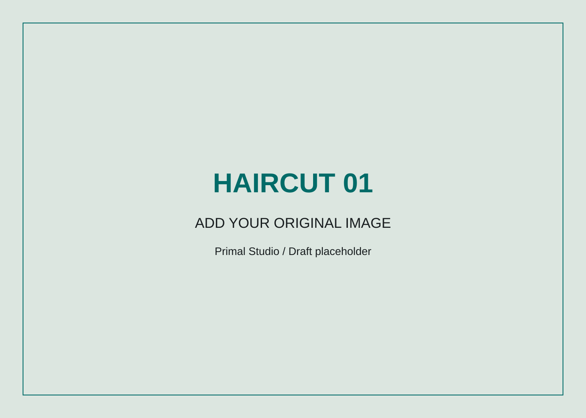
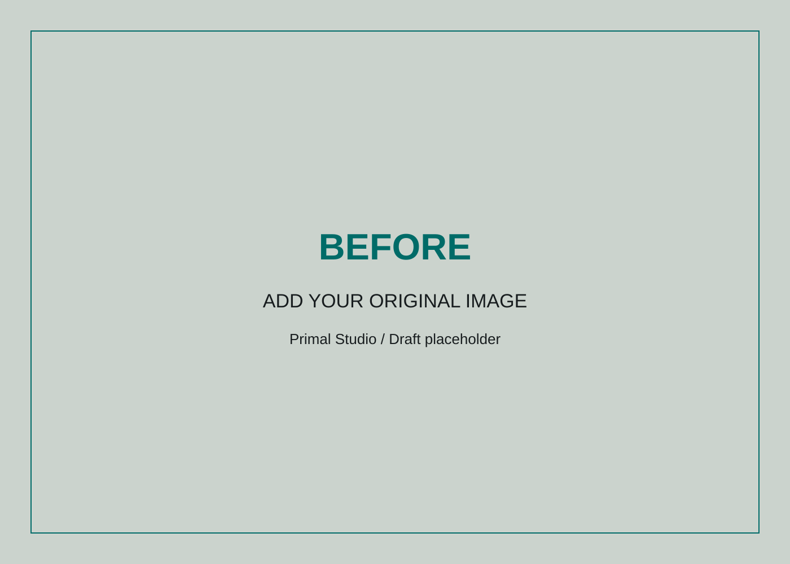
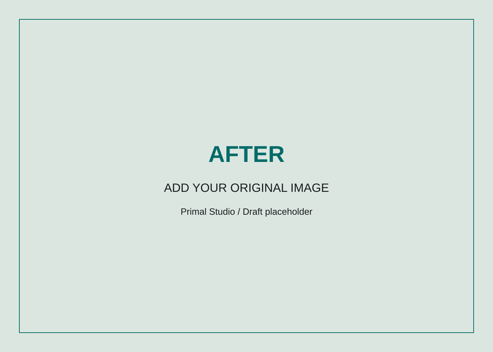

PRIMAL STUDIO / BARBERING
Style starts
with the details.
A thoughtful look at shape, texture, and personal expression.
Email a Barbering Inquiry
A barber’s perspective
My background in barbering shapes the way I look at personal style. The outline of a haircut, the movement of the hair, and the way a style frames the face all contribute to someone’s appearance. I am interested in how those details work together and how a haircut can become part of a person’s everyday identity.
This page will bring together original haircut photographs and clearly labeled practice work where needed. Each image should show something specific about the cut, such as its shape, texture, profile, or finish. Matching views will help visitors understand the work without relying on long descriptions or exaggerated claims.
Haircut details
Before and after
Use the range control to reveal matching views. These labeled placeholders demonstrate the interaction until a real pair is available.


BeforeAfterStart with your style
If you are interested in barbering, begin by describing your current look and what you want to change. Reference images can help explain a direction, but the conversation should also consider how you wear your hair day to day. Let me know whether you are thinking about a different shape, more definition, or a look that connects with a portrait session.
Photography and barbering can support the same personal story. A haircut changes the way someone presents themselves, and a portrait can capture that change. This connection is the central idea behind Primal Studio and the reason both practices share one portfolio.
Include in your inquiry
- Your haircut or styling interests
- Reference images, if you have them
- Whether photography is part of your idea
- Your preferred timing
Availability and any service details will be discussed directly. This website does not confirm appointments.
Discuss Your Look